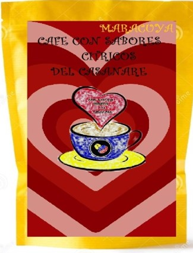
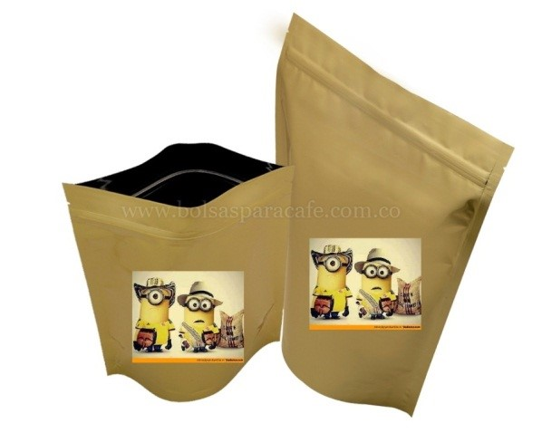

CAFÉ CON SABORES CÍTRICOS DEL CASANARE
Product: This production and commercialization project whose name is CAFÉ CON SABORES CÍTRICOS DEL CASANARE is based on the growth and improvement of coffee in the market in Yopal Casanare and later the search for its expansion to the rest of the country.
Price: It is a 100% Casanareño product because within the department we have the municipality of Tamara, which has the necessary characteristics to be able to plant and produce quality coffee to be marketed at a price that suits the public in the region.
Distribution: Distribution is a point in favor from Tamara is located less than 2 hours from Yopal, taking into account that the starting point of the distribution channel is the producer.
Packaging: The chosen packaging has as its main point that it is usually cheaper than some of the other options. The packaging can be easily filled from above, the large opening makes this task easy and efficient, thus helping to speed up operations and avoid problems. Plus, the gusset at the base allows the pack to stand up on the shelf and there's plenty of room for branding. A talented designer can work with this style to create eye-catching packaging that better showcases the product and highlights its qualities.
 